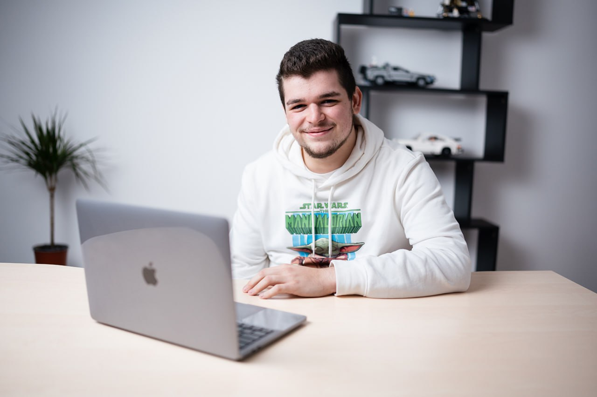

Pop Gabriel Flaviu
Frontend Software Developer

Summary
I am a sociable, funny and smart person which loves to learn new
things. A fast learner, always opened to learn new things. Can't
wait to get a challenge, because whenever I receive one, I do
everything I can to accomplish it!
- Very good communication and teamwork skills
-
I participated in the creation of programming contests and wrote
hundreds of lines of code
-
4th place in all-time rating on WellCode platform out of over
10000 users
Education
- 2024 – Currently: UBB FSEGA – Business Computer Science
-
August 2021 – April 2022: Wellcode mentorship program – Software
Development:
-
Fundamentals of programming: C++(150+ algorithmic
problems solved)
- Databases: SQL
- Web Development: Javascript
- Object-oriented programming in Java
-
4th place in all-time rating on WellCode platform out of
over 10000 users
-
2016 - 2020: Seminarul Teologic "Sf. Iosif Marturisitorul" Baia
Mare
-
Record on exams: Graduated with the average of 9.60 out
of 10.
Work Experience
-
2022 - Present: WellCode PB S.R.L
- Web Developer:
Worked on CodeSniffer, a web application written in React +
Perl, that we used to code review our students code. It was
a kind of a GitHub copy, where I implemented tasks like:
- User Reset Password
- Email Notifications using PostMark
-
Tokens in the backend for the activation and
deactivation of the email notifications from email
links.
-
Coaching Manager and
Technical Coach
-
Did 100% of the tasks on time, picked up extra
tasks, had the opportunity to train others.
-
Created weekly programming contests(the idea of
the problems, tests for the problems, official
solutions and the editorial for them).
-
Sustained technical interview simulation call
with our students and also, technicals calls.
Skills
-
Frontend
- JavaScript
- React
- React Native
- TypeScript
- Next.JS
-
Backend
- C++
- Java
- SQLite
- FireBase
- Perl
- PostgreSQL
-
Soft Skills
- Attention to details
- Social Skills
- Team Player
- Communication
Feel free to contact me!